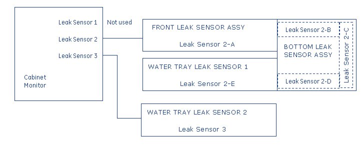
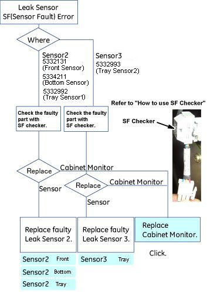
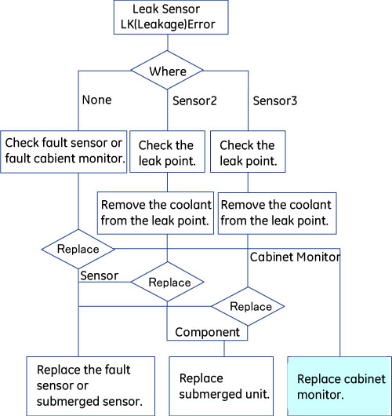

Water Leak Troubleshooting
1 Overview
This troubleshooting identifies the defective FRU parts regarding water leak sensing system. Refer to Parts manual for FRU part number.
Refer to the following related document also.
Leak Sensor Location and Function
Cabinet Monitor Functional Check
Figure 1. Cabinet monitor and Leak Sensor Relation

Figure 2. Detail of Leak Sensor 2 and 3

Leak Sensor Troubleshooting consists of as following contents.
-
Flow chart of Sensor Fault troubleshooting : Flow Chart of Sensor Fault Troubleshooting
-
Flow chart of Water Leakage troubleshooting : Flow Chart of Water Leakage Troubleshooting
-
Tank/Pump troubleshooting : Tank/Pump Troubleshooting
-
How to use SF Checker : How to use SF Checker
-
Error Message : Error Message
2 Flow Chart of Sensor Fault Troubleshooting
Click on  to see the detail procedure.
to see the detail procedure.
Figure 3. Flow Chart of Sensor Fault Troubleshooting

3 Flow Chart of Water Leakage Troubleshooting
Leakage Point Check:
-
Leak Sensor 2:
If the Leak Sensor2 detects the leakage, LK2 LED is lit and error message is displayed on Host and Emergency Stop will work.
Check coolant leakage around hoses of SRFD3, XFD and water tray.
-
Leak Sensor 3:
If the Leak Sensor3 detects the leakage, LK3 LED is lit and error message is displayed.
Check coolant leakage around the water manifold and water tray.
-
Other:
When leakage error occurs without leakage, refer to How to use SF Checker.
Figure 4.

4 Tank/Pump Troubleshooting
Tank Alarm Error:
Check the coolant level, and check the leakage between system cabinet and cooling unit. If there is leakage, repair or replace the parts. If there is no leakage, check that there is no error after refilling the coolant.
The cable of tank and pump alarm is RUN2044, and MCS/LCS water level sensor is normally open (when running, it's open state).
5 How to use SF Checker
5.1 Cabinet Monitor Check:
-
Connect SF checker to J1, J2 or J3 of cabinet monitor. If SF checker connecting to J1, do not disconnect sensor connectors at J2 and J3.
-
Turn the cabinet monitor power from OFF to ON.
-
If the SF and LK LED on cabinet monitor are not lit, the cabinet monitor is normal.
-
If the SF and LK LED are lit, the cabinet monitor is fault. It is internal fault or short/open of cabinet monitor.
5.2 Sensor Check:
Leak sensor 2 and 3 consists of several sensors. For troubleshooting, identify the fault sensor or leakage point with SF checker.
-
Disconnect the connector between sensors.
-
Connect the SF checker to sensor connector of cabinet monitor side.
-
Turn the cabinet monitor power from OFF to ON.
-
If the SF and LK LED on cabinet monitor are not lit, the cabinet monitor is normal.
-
If the SF or LK LED are lit , there is fault sensor or leakage between the cabinet monitor and sensor. Connect the SF checker to each sensor with similar steps, and identify fault sensor.